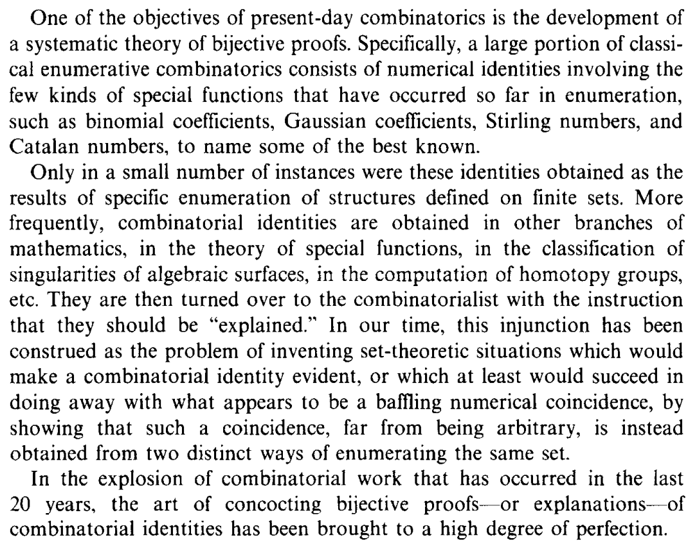

Motivation: on the tension between algebraic and bijective proofs
In the words of R. Stanley, the basic problem of enumerative combinatorics is that of counting the number of elements of a finite set.
Inside this area of mathematics, there exists a tension between two different ways to concoct a proof for a statement (Stanley goes through a thorough analysis of what is really means answering the above problem). In the words of another combinatorialist,

In order to appreciate what is a bijective proof, consider the following identity:
There is an algebraic way of establishing this identity, namely observing that $\binom pk$ is the coefficient $[x^k](1+x)^p$, and similarly $[x^{n-k}](1+x)^q = \binom q{n-k}$; but then,
the claim now follows from comparing coefficients.
There is however another way to argue, the bijective way: the number $\binom pk$ is nothing but the cardinality of the set of injections $N \hookrightarrow P$ if $N$ is a $n$-set and $P$ is a $P$-set. Thus, the question we have is: why is the cardinality of the set of injections $N \hookrightarrow P+Q$ equal to the product of the cardinalities of the sets $\text{Inj}(K,P)$ and $\text{Inj}(N\setminus K,Q)$? In the category $\bf Set$ coproducts and monomorphisms are pullback-stable, so to determine an injection $f:N\hookrightarrow P+Q$ it is sufficient to determine the sets $I,J$ in the pullbacks

(the sets $I,J$ partition $N$: $I∩ J=\varnothing, I+J=N$).
Enumerative combinatorics has a tension between these two complementary styles of proof. Somehow, one is close to an Erdősian style, and the other is more in the vibe of G.-C. Rota (but this is not intended as a judgment in quality).
Combinatorial species are the coronation of an attempt to unify these two perspectives, recognizing their respective limits and values, offering a unified framework in which the theory of generating functions (à la Wilf) can be framed and understood at a deeper level.
The theory was first put forward in two papers by A. Joyal,
- Joyal, André. Une théorie combinatoire des séries formelles. Advances in mathematics 42.1 (1981): 1-82.
- Joyal, André. Foncteurs analytiques et especes de structures. Combinatoire énumérative. Springer, Berlin, Heidelberg, 1986. 126-159.
which promoted for a long time the idea that the category $\bf Spc$ of combinatorial species is a categorified analogue of the semiring $\mathbb N\llbracket T\rrbracket$.